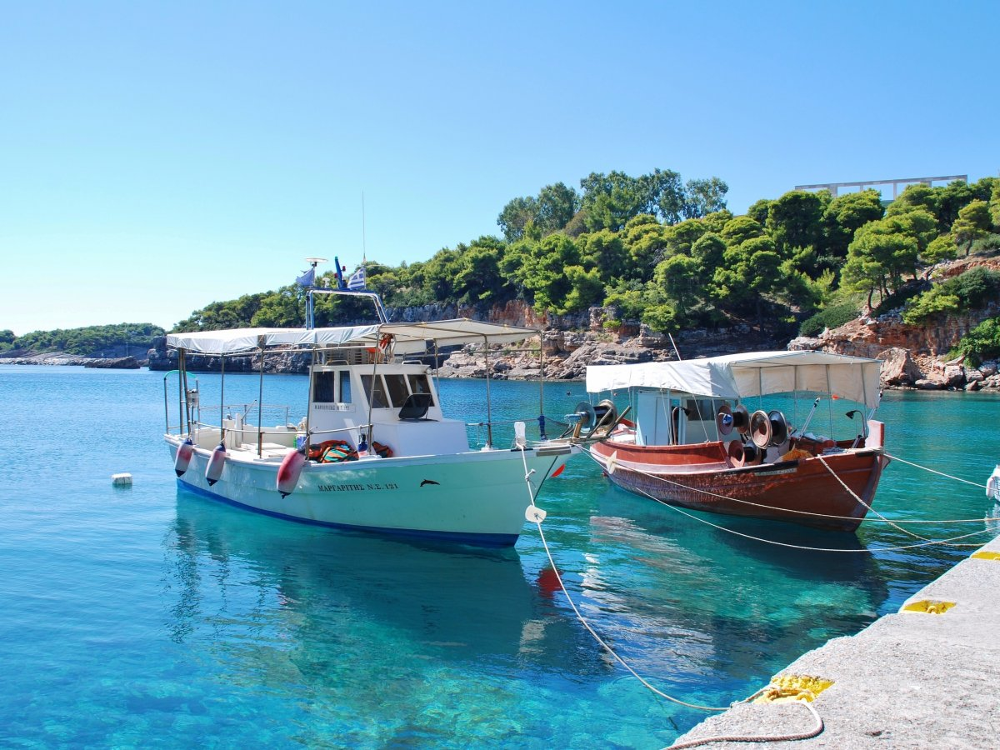
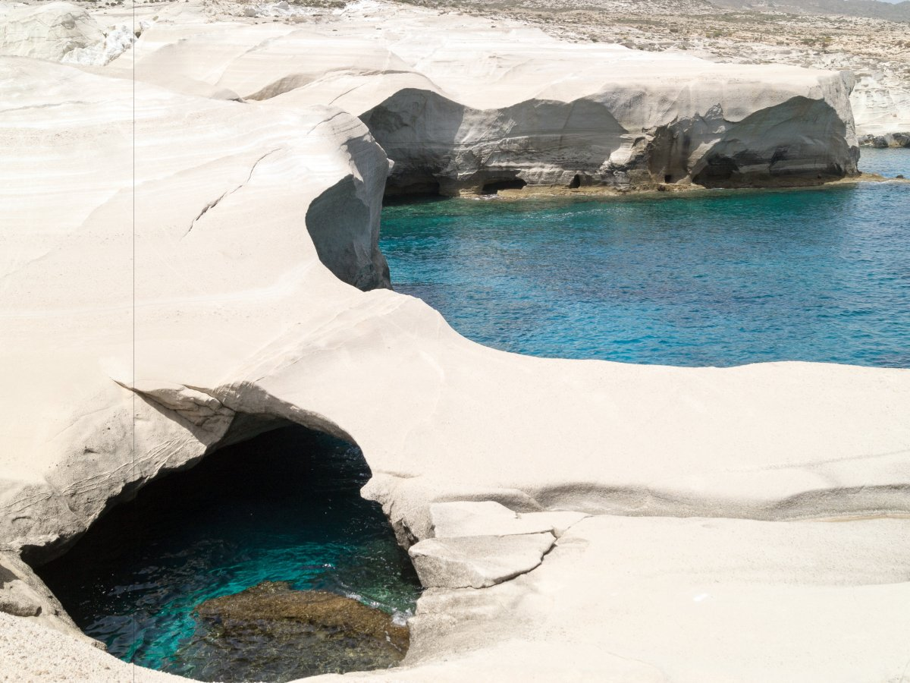

The Travel Report
body copy and image credits: Sophie-Claire Hoeller
9 Gorgeous Greek islands
Now is the time to travel to Greece. The country may be going through an economic crisis, but many travellers say that it hasn't impacted the experience of visiting. Plus, there may be some great deals.
Greece has 1,400 islands, though only 230 of them are inhabited.
And while everyone knows about Santorini and Mykonos, there are gorgeous lesser-known islands in Greece, too.

Here are 9 incredible Greek islands you may not have heard of, but should have on your radar.
Folegandros

Folegandros is almost a Greek cliché, full of beautiful whitewashed houses with bright blue doors lining cobblestoned
streets on steep cliffs. Rugged and remote, without chain hotels or package tours — not even a bank or ATM — and accessible
only by ferry, the volcanic island boasts solitude in spades, secluded beaches, and incredible sunsets.
Alonissos

Off the mainland, this island, whose surrounding waters are a designated marine park full of seals and dolphins,
is a nature lover's dream. The spectacular spot's crystal clear waters and beautiful beaches are perfect for diving,
and its lush flora and dense forests ideal for hikes. Since the rich landscape is chock full of indigenous herbs,
it's also known for its traditional medicine, and home of the International Academy of Homeopathy.
Spetses

This bohemian paradise is more Côte d'Azur than Grecian island. Spetses was hot in the '60s,
when it hosted Marilyn Monroe and Elizabeth Taylor, and remains a swanky summer retreat for Athens' glitterati to this day,
full of fancy hotels, mansions and yachts, and stylish boutiques. Aside from a handful of locally-owned cabs,
the four-mile-long island has banned cars in town, giving it a refreshingly 19th-century vibe,
with horse-drawn carriages being a common sight.
Amorgos

Shipwrecks, sea caves and beautiful clear waters make Amorgos popular with snorkelers, but the mountainous island is
the perfect compromise between unwinding and adventure, boasting beautiful beaches but also hiking, scuba diving and
rock-climbing. One of the island's main attractions is the 11th-century cliffside monastery of Panayia Hozoviótissa,
which is precariously carved into a cliff.
Syros

A favourite Athenian escape and former shipowners' vacation spot full of grand mansions, Syros is little known to foreigners.
Famous for its neoclassical architecture and perfectly preserved heritage, its capital, Ermoupolis,
was a 13th-century Venetian-built town and important trade and industrial centre,
and boasts giant churches and beautiful villas, a stunning town hall, and labyrinthine streets and stairways.
Milos

This volcanic island, with catacombs and ancient iron mines to explore, is dramatically rugged, and famous for
its stunning rock formations. Often likened to a moonscape, it's also known for its hot springs, the ancient Venus
De Milo statue that was found here, and for its diversity of incredible beaches. Known as "the island of colours"
it's home to around 80 beaches — some only accessible by boat — ranging from stunningly white, to striking black,
and even unusual red and grey. However, each beach has the same Evian-clear turquoise waters, and is surrounded by
a rugged mountain landscape.
Hydra
The first thing you'll notice on this beautiful island is the lack of cars — and buses, motorcycles, or other wheeled vehicles,
as well as high rises. The winding little streets full of beautiful 18th-century mansions, churches, cathedrals,
museums and art galleries are covered in cobblestones, and mostly trafficked by donkeys and humans. Back in the day,
the island attracted celebrities like Leonard Cohen and Sophia Loren, but was somehow forgotten over the years. That
means that travellers to Hydra can have the chic yet almost rural island paradise more or less to themselves.
Ithaca

Most famous for being the home of Odysseus, and a prominent figure in Homer's "The Odyssey," Ithaca is said to have
been inhabited since the 2nd millennium BC. Made up of two islands joined by a narrow strip of land, many visit it
to see the legendary sites mentioned by Homer. However, Ithaca is more than its mythical counterpart, beckoning with
secluded beaches, dramatic cliffs, beautiful olive groves, and sleepy fishing villages full of Byzantine churches
and monasteries.
Gavdos

Near the more well-known Crete, Gavdos is the most southern island in Greece — and the most southern spot in Europe
discounting the Canaries. Only accessible by ferry, the remote island has only about 50 permanent residents, and can
feel like your private playground. Local legend has it that the island was the home of goddess Calypso, who kept
Odysseus prisoner here. Today, a favorite tourist activity is to visit the spot believed to be her cave. Be warned,
you won't find any luxury hotels here. While the romantically under-developed, super laid back island has a number
of rooms for rent, those are limited, as the real draw here for many is the free, seaside camping.